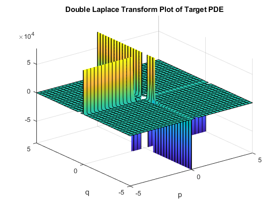

Contents
function Double_Laplace_Transform_Demo
% DOUBLE_LAPLACE_TRANSFORM_DEMO Demonstrating Double Laplace Transform % Laplace Transform: % F(s) = integration(f(x)*e^(-s*x)dx)(from 0 to infinite) % Double Laplace Transform: % F(p,q) =integration((ingegration(f(x,t)*e^(-p*x)dp)(from 0 to infinite))*e^(-q*t))(from 0 to infinite) % Our program aims to provide a PDE solver utilizes double Laplace transform. This may help future % iGEM teams to find the solutions of PDEs with higher efficiency and accuracy. clc;clear;
Variables Commands
syms x; syms t; syms p; syms q;
Obtaining Answer
sol(p,q) = DLT(@TargetFunc,@ICFunc,@BCFunc,x,t); % Delete the ';' if you want to see the final resulte of sol. In this case, sol = -(6/q^2 - (8*(p/4 + 1))/p^2 + 2)/(2*p + 2*q + 2)
Plot Command with Demo
%{ Here for typing the plot type you want, such as fplot, fsurf. %} figure; fsurf (p,q,sol(p,q)); xlabel('p'); ylabel('q'); title('Double Laplace Transform Plot of Target PDE');
Plot the Solution of the Origin Function
%{ sol plots the graph of double Laplace transform, not the target function itself; if you want to get the solution of the target function, use iLaplace function. For example: invsol = ilaplace(ilaplace(sol,p,x),q,t); fsurf(x,t,invsol(x,t)); Noted that ilaplace doesn't always come out with a real solution. If that's the case, using numerical approximation is an alternative. %}
end
Target Function
function [p1,Lapp2,q1,q2] = TargetFunc(x,t)
Syntax
%{ p1*DfDt + p2 + q1*DfDx + q2*f = 0 In this case, we'll get the PDE below: 2*DfDt + 2*x + 2*t + 2*DfDx - 5*f = 0 %} syms x; syms t; syms p; syms q; p1 = 2; p2 = 2*x + 2*t; q1 = 2; q2 = -5; Lapp2 = laplace(laplace(p2,x,p),t,q);
end
Initial Condition
function [LapIC] = ICFunc(x)
syms x; syms p; IC = 4*x+1; LapIC = laplace(IC,x,p);
Notice
%{ Sometimes typing laplace(IC,x,p) will get the result as: laplace(IC,x,p). It means that IC is not convertable in MATLAB. In this case, we cannot get the formula form of Target Function. The only way is to look for numerical solution. Take a look at Numerical_Laplace_Transform_Plotter.m, You can type in the numerical approximation of laplce(IC) by using Numerical_Laplace_Transform_Estimator.m, and continue to run this script. %}
end
Boundary Condition
function [LapBC] = BCFunc(t)
syms t; syms q; BC = -3*t; LapBC = laplace(BC,t,q);
Notice
%{ Same as mentioned in LaplIC. %}
end
Operation of double Laplace transform
function DLTANS = DLT(ps,LapIC,LapBC,x,t) syms x; syms t; syms p; syms q; p1 = ps(1); p2 = ps(2); q1 = ps(3); q2 = ps(4); DLTANS = ((p1)*(LapIC(p)) + (q1)*(LapBC(q)) - p2)/((p1)*q + (q1)*p + q2); % Do not change this line, this is for solving PDEs! end